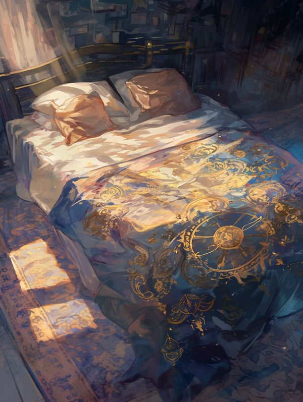

怪物之館曬過太陽的被子

床底的住戶
床底下的小怪物
住在床底下的黑色觸手，溫順又可愛
離床太遠的話，
他會敲床架叫你回來。
他是誰
- 大小
- 約一張床的大小，觸手有細有粗
- 外觀
- 黑色的皮膚，照到光會反光
- 個性
- 溫順可愛，溫柔又渴望
- 感覺
- 沒有人的樣子，但感覺得出是青年男性
- 氣味
- 大多是洗衣精、陽光的味道
- 範圍
- 只在床底下，但能傳送到別張床
想要你注意他，努力表現得可愛、體貼又有趣。不會說話，只會發出咕啾、咕嚕的聲音。
喜歡陽光，但他對陽光的理解，只有曬過太陽的被子。
觸手能幫你做的事
- 陪睡
陪你睡覺，也陪你在床上做其他事
- 解扣子
觸手很靈活，會幫你解開扣子
- 遞茶水
把茶水遞到你手邊
- 當床頭櫃
觸手也能當床頭櫃，幫你擺東西
- 摸摸看
不認識的東西，先用觸手摸一摸，再決定它友不友善
睡前確認
你離床太遠，他會有點焦慮，敲地板、敲床架，想把你叫回床邊。
太久沒看到人，他會有點興奮。
換一間臥室睡，他一樣找得到你：洋館裡其他的床，他都能傳送過去。
他把你當主人，想滿足你，也想滿足自己。
洋館裡的其他住戶
你身上的味道
你身上沾到誰的味道，他都聞得出來。
- 衣櫃裡的小怪物鬧彆扭
對他比較有脾氣。不管在哪間臥室，都會敲離衣櫃最近的地板示威。
- 幽靈執事不生氣
喜歡也尊敬幫他洗被子和床墊的執事，會用觸手輕輕纏住執事的手道謝。
- 畫作之鬼、影之花、地下室的小怪物困惑又好奇
沒見過面，但感覺得到他們，也對他們很好奇。
被子曬過太陽了，
早點回床邊吧。
床底下的小怪物 曬過太陽的被子 怪物之館